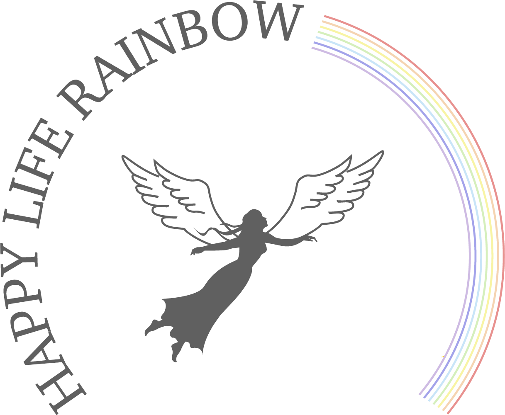

<!DOCTYPE html>
<html lang="ja">
<head>
  <meta charset="UTF-8" />
  <meta name="viewport" content="width=device-width, initial-scale=1.0" />
  <title>ハッピーライフレインボー™︎ | 潜在意識バイアス診断</title>

  <script src="https://unpkg.com/react@17/umd/react.development.js"></script>
  <script src="https://unpkg.com/react-dom@17/umd/react-dom.development.js"></script>
  <script src="https://unpkg.com/@babel/standalone/babel.min.js"></script>
  <script src="https://cdn.tailwindcss.com"></script>

  <style>
    @import url('https://fonts.googleapis.com/css2?family=Noto+Serif+JP:wght@200;400;700&family=Noto+Sans+JP:wght@300;400;500;700;900&display=swap');

    :root {
      --mental: #FF9AA2;
      --health: #FFB347;
      --work: #FFD93D;
      --money: #6BCB77;
      --learning: #4ECDC4;
      --hobby: #7ED6DF;
      --living: #5DADE2;
      --relation: #C8A2C8;
      --ink: #243042;
      --gold: #c5a059;
      --rose: #ec407a;
    }

    * { box-sizing: border-box; }

    body {
      margin: 0;
      font-family: 'Noto Sans JP', sans-serif;
      color: var(--ink);
      background: #ffffff;
      overflow-x: hidden;
    }

    .aurora-bg {
      position: fixed;
      inset: 0;
      z-index: -1;
      background:
        radial-gradient(circle at 15% 12%, rgba(255,154,162,.23), transparent 28%),
        radial-gradient(circle at 88% 16%, rgba(126,214,223,.22), transparent 30%),
        radial-gradient(circle at 50% 90%, rgba(107,203,119,.16), transparent 32%),
        linear-gradient(135deg, #ffffff 0%, #f8fbff 100%);
    }

    .glass-card {
      background: rgba(255,255,255,.76);
      backdrop-filter: blur(26px);
      -webkit-backdrop-filter: blur(26px);
      border: 1px solid rgba(255,255,255,.88);
      box-shadow: 0 38px 90px rgba(31,41,55,.075);
    }

    .serif { font-family: 'Noto Serif JP', serif; }

    .text-reveal {
      animation: textReveal 1.1s cubic-bezier(.16, 1, .3, 1) both;
    }

    @keyframes textReveal {
      from { opacity: 0; transform: translateY(16px); filter: blur(5px); }
      to { opacity: 1; transform: translateY(0); filter: blur(0); }
    }

    .btn-rainbow {
      background: linear-gradient(90deg, var(--mental), var(--health), var(--work), var(--money), var(--learning), var(--hobby), var(--living), var(--relation));
      transition: all .35s cubic-bezier(.16, 1, .3, 1);
      letter-spacing: .12em;
    }

    .btn-rainbow:hover {
      transform: translateY(-2px);
      box-shadow: 0 18px 36px rgba(236,64,122,.18);
      filter: saturate(1.04);
    }

    .custom-scrollbar::-webkit-scrollbar { width: 5px; }
    .custom-scrollbar::-webkit-scrollbar-track { background: transparent; }
    .custom-scrollbar::-webkit-scrollbar-thumb { background: #e5e7eb; border-radius: 999px; }

    .soft-card {
      background: rgba(255,255,255,.78);
      border: 1px solid rgba(255,255,255,.9);
      box-shadow: 0 16px 36px rgba(31,41,55,.045);
    }

    .rainbow-line {
      height: 4px;
      border-radius: 999px;
      background: linear-gradient(90deg, var(--mental), var(--health), var(--work), var(--money), var(--learning), var(--hobby), var(--living), var(--relation));
    }

    .hlr-icon svg {
      width: 44px;
      height: 44px;
      stroke-linecap: round;
      stroke-linejoin: round;
      transition: transform .35s cubic-bezier(.16,1,.3,1);
    }

    .hlr-icon:hover svg { transform: scale(1.08); }
  </style>
</head>

<body class="min-h-screen flex items-center justify-center p-4 sm:p-10">
  <div class="aurora-bg"></div>
  <div id="root" class="w-full max-w-4xl"></div>

  <script type="text/babel" data-presets="env,react">
    const { useState } = React;

    const bookingUrl = 'https://example.com/free-session';

    function IconGlyph({ id, color }) {
      const line = { fill: 'none', stroke: 'currentColor', strokeWidth: 8, strokeLinecap: 'round', strokeLinejoin: 'round' };
      const thin = { fill: 'none', stroke: 'currentColor', strokeWidth: 6, strokeLinecap: 'round', strokeLinejoin: 'round' };

      const glyphs = {
        mental: (
          <g color={color}>
            <path {...line} d="M150 220 C105 184 70 154 78 114 C84 83 122 75 150 109 C178 75 216 83 222 114 C230 154 195 184 150 220Z" />
            <circle cx="150" cy="150" r="5" fill="currentColor" />
            <path {...thin} d="M95 78 L82 58 M125 62 L118 38 M150 55 L150 28 M175 62 L182 38 M205 78 L218 58" />
          </g>
        ),
        health: (
          <g color={color}>
            <path {...line} d="M55 178 C95 138 125 218 150 178 C175 138 205 218 245 178" />
            <path {...line} d="M55 216 C95 176 125 256 150 216 C175 176 205 256 245 216" />
            <circle {...line} cx="150" cy="122" r="22" />
            <circle cx="150" cy="72" r="7" fill="currentColor" />
            <circle cx="150" cy="42" r="5" fill="currentColor" />
          </g>
        ),
        work: (
          <g color={color}>
            <path {...line} d="M50 205 H250" />
            <path {...line} d="M105 205 A45 45 0 0 1 195 205" />
            <path {...thin} d="M150 42 V130 M150 42 L132 62 M150 42 L168 62" />
            <path {...thin} d="M82 150 L58 132 M105 128 L92 100 M128 115 L120 82 M172 115 L180 82 M195 128 L208 100 M218 150 L242 132" />
          </g>
        ),
        money: (
          <g color={color}>
            <path {...line} d="M72 176 C72 116 116 74 172 84 C225 94 246 150 221 195 C195 241 132 245 96 207" />
            <path {...thin} d="M205 84 C218 56 235 44 260 40 C264 68 252 88 225 100" />
            <path {...thin} d="M198 86 C183 64 161 58 140 62 C145 88 166 101 195 100" />
            <path {...thin} d="M92 156 C84 166 84 178 92 188" />
            <circle cx="94" cy="172" r="5" fill="currentColor" />
          </g>
        ),
        learning: (
          <g color={color}>
            <path {...line} d="M48 180 C92 162 128 177 150 236 C172 177 208 162 252 180" />
            <path {...line} d="M65 212 C104 194 131 205 150 236 C169 205 196 194 235 212" />
            <path {...line} d="M82 242 C115 224 138 229 150 236 C162 229 185 224 218 242" />
            <path {...thin} d="M150 68 C156 96 166 106 194 112 C166 118 156 128 150 156 C144 128 134 118 106 112 C134 106 144 96 150 68Z" />
          </g>
        ),
        hobby: (
          <g color={color}>
            <path {...line} d="M101 218 C57 181 69 91 135 76 C196 62 206 126 178 160 C150 194 93 177 122 130 C148 88 217 112 197 178 C184 220 121 235 103 184 C88 141 161 125 172 172 C182 215 222 225 247 193" />
            <path {...thin} d="M228 66 C234 91 243 100 268 106 C243 112 234 121 228 146 C222 121 213 112 188 106 C213 100 222 91 228 66Z" />
            <circle cx="236" cy="164" r="5" fill="currentColor" />
          </g>
        ),
        living: (
          <g color={color}>
            <path {...line} d="M55 130 L150 48 L245 130" />
            <path {...line} d="M75 135 V207 C75 238 100 248 128 248 H172 C200 248 225 238 225 207 V135" />
            <path {...thin} d="M118 186 C130 205 170 205 182 186" />
            <circle cx="150" cy="164" r="6" fill="currentColor" />
          </g>
        ),
        relation: (
          <g color={color}>
            <circle {...line} cx="117" cy="158" r="72" />
            <circle {...line} cx="183" cy="158" r="72" />
            <path {...thin} d="M150 187 C132 172 125 160 129 148 C133 136 146 135 150 146 C154 135 167 136 171 148 C175 160 168 172 150 187Z" />
            <path {...thin} d="M150 52 V34 M126 62 L112 48 M174 62 L188 48" />
          </g>
        )
      };

      return glyphs[id];
    }

    function CategoryIcon({ id, color, size = 44 }) {
      return (
        <span className="hlr-icon inline-flex items-center justify-center">
          <svg viewBox="0 0 300 300" width={size} height={size} role="img" aria-label={id + ' icon'}>
            <IconGlyph id={id} color={color} />
          </svg>
        </span>
      );
    }

    const categories = [
      {
        id: 'mental', name: 'MENTAL', jp: 'メンタル', color: 'var(--mental)', layer: '価値観・内面',
        role: 'すべての土台。心のあり方、自己肯定感、マインドセットを整える領域です。',
        disturbed: '自己否定や思考の固定が起きやすく、行動が止まりやすい状態。',
        balanced: '自分を信じる力が戻り、自然と選択と行動が軽くなる状態。',
        questions: [
          '本当は変わりたいのに、「自分には無理かもしれない」と感じることがある。',
          'うまくいかない理由を、自分の性格や過去のせいにしてしまうことがある。',
          '人と比べて、自分には足りないものばかり見えてしまうことがある。',
          '褒められても素直に受け取れず、「まだまだ」と思ってしまう。',
          '本音よりも、周りからどう見られるかを優先してしまうことがある。'
        ]
      },
      {
        id: 'health', name: 'HEALTH', jp: '健康', color: 'var(--health)', layer: '身体・行動力',
        role: '行動力の源泉。体力、回復力、睡眠、生活リズムを支える領域です。',
        disturbed: '疲れやストレスが溜まり、集中力や前向きさが下がりやすい状態。',
        balanced: '心身の土台が安定し、自然に動き続けられる状態。',
        questions: [
          '自分の体調や疲れを後回しにして、無理を続けてしまうことがある。',
          '健康を整えたいと思っても、「忙しいから仕方ない」と諦めてしまう。',
          '休むことに罪悪感があり、つい予定を詰め込んでしまう。',
          '睡眠・食事・運動を整えたいと思いながら、後回しになりやすい。',
          '体からの小さなサインに気づいても、まだ大丈夫だと思ってしまう。'
        ]
      },
      {
        id: 'work', name: 'WORK', jp: '仕事', color: 'var(--work)', layer: '社会・価値発揮',
        role: '価値発揮の場。役割、キャリア、貢献、社会との接点を表します。',
        disturbed: 'やりがいや自己表現が弱まり、働き方への違和感が強まりやすい状態。',
        balanced: '自分の価値を実感し、貢献と成長がつながる状態。',
        questions: [
          '今の仕事や役割に違和感があっても、「これが現実だから」と我慢している。',
          '自分の本当にやりたい仕事を考えると、現実的ではない気がしてしまう。',
          '仕事で評価されるために、自分らしさを抑えていると感じることがある。',
          '本当は挑戦したいことがあっても、安定を手放すのが怖い。',
          '自分の強みや価値が、仕事で十分に活かされていない気がする。'
        ]
      },
      {
        id: 'money', name: 'MONEY', jp: 'お金', color: 'var(--money)', layer: '選択肢・安心感',
        role: '人生の選択肢。収入、支出、価値交換、豊かさを受け取る力を扱います。',
        disturbed: '不安や罪悪感から、選択や自己投資にブレーキがかかりやすい状態。',
        balanced: 'お金の使い方・受け取り方に納得感があり、選択肢が広がる状態。',
        questions: [
          'お金を使うことに、どこか罪悪感や不安を感じることがある。',
          '自分がもっと豊かになっていい、とは心から思えないことがある。',
          'お金の話をすることに、抵抗感や恥ずかしさがある。',
          '欲しいものがあっても、「自分には贅沢かも」と思ってしまう。',
          '収入や価格を上げることに、どこか申し訳なさを感じる。'
        ]
      },
      {
        id: 'learning', name: 'LEARNING', jp: '学び', color: 'var(--learning)', layer: '未来・成長',
        role: '未来を広げる力。知識、スキル、探究、可能性を育てる領域です。',
        disturbed: '完璧主義や比較によって、新しい一歩を止めやすい状態。',
        balanced: '小さく試しながら吸収し、未来の選択肢が広がる状態。',
        questions: [
          '学びたい気持ちはあるのに、「今さら遅い」と感じることがある。',
          '新しいことを始める前に、失敗や継続できない自分を想像して止まってしまう。',
          '完璧に準備できるまで、始めない方がいいと思ってしまう。',
          '学んでも結果につながらなかったらどうしよう、と不安になる。',
          '自分より詳しい人を見ると、始める前から自信をなくしてしまう。'
        ]
      },
      {
        id: 'hobby', name: 'HOBBY', jp: '趣味', color: 'var(--hobby)', layer: '彩り・創造性',
        role: '人生の彩り。楽しさ、余白、遊び心、創造性を取り戻す領域です。',
        disturbed: '楽しむことへの罪悪感から、心の余白や発想力が減りやすい状態。',
        balanced: '楽しさがエネルギーとなり、日常と成長に彩りが生まれる状態。',
        questions: [
          '好きなことをする時間に、どこか罪悪感を覚えることがある。',
          '趣味や楽しみは「余裕がある人のもの」だと思ってしまう。',
          '役に立つことや成果につながることを優先し、楽しみを後回しにしやすい。',
          '自分が何を好きなのか、すぐに答えられないことがある。',
          '楽しんでいる自分を、人に見せるのが少し恥ずかしい。'
        ]
      },
      {
        id: 'living', name: 'LIVING', jp: '暮らし', color: 'var(--living)', layer: '日常・環境',
        role: '日常の質。住まい、時間、生活習慣、心地よい環境を整える領域です。',
        disturbed: '日々をこなす感覚が強くなり、心地よさや安定感が薄れやすい状態。',
        balanced: '環境が整い、安心して自分らしく過ごせる状態。',
        questions: [
          '本当は暮らし方を変えたいのに、「今の環境では難しい」と思っている。',
          '自分が心地よく過ごすことより、日々をこなすことを優先している。',
          '住まいや持ち物、時間の使い方に違和感があっても見ないふりをしている。',
          '理想の暮らしを考えると、今の自分にはまだ遠いと感じる。',
          '日常を整えることより、目の前の予定をこなすことが多い。'
        ]
      },
      {
        id: 'relation', name: 'RELATIONSHIP', jp: '人間関係', color: 'var(--relation)', layer: 'つながり・安心',
        role: '人生の満足度。家族、友人、職場、信頼、安心してつながる力を扱います。',
        disturbed: '遠慮や我慢が増え、本音や安心感が見えにくくなる状態。',
        balanced: '安心して頼り合い、自分らしい関係性を育てられる状態。',
        questions: [
          '本音を言うと嫌われる、迷惑をかける、と思ってしまうことがある。',
          '人に頼るより、自分で抱え込んだ方が楽だと感じることがある。',
          '相手に合わせすぎて、自分の気持ちが分からなくなることがある。',
          '断ることやお願いすることに、強いハードルを感じる。',
          '本当はもっと安心してつながりたいのに、距離を取ってしまうことがある。'
        ]
      }
    ];

    const oppositePairs = {
      mental: 'learning', learning: 'mental',
      health: 'hobby', hobby: 'health',
      work: 'living', living: 'work',
      money: 'relation', relation: 'money'
    };

    const adjacentNext = {
      mental: 'health', health: 'work', work: 'money', money: 'learning',
      learning: 'hobby', hobby: 'living', living: 'relation', relation: 'mental'
    };

    const pairThemes = {
      'mental-learning': '内面と成長の対話',
      'health-hobby': 'エネルギーと楽しさの循環',
      'work-living': '役割と日常のバランス',
      'money-relation': '価値とつながりの関係性'
    };

    function getCategory(id) {
      return categories.find(function(c) { return c.id === id; });
    }

    function getLevel(score) {
      if (score >= 5) return {
        label: '最優先テーマ',
        tone: 'ここには、今のあなたがいちばん丁寧にほどきたい深いサインが集まっています。',
        badge: 'bg-rose-50 text-rose-500 border-rose-100'
      };
      if (score >= 4) return {
        label: '見直し優先',
        tone: 'この領域では、気づかないうちに力が入りすぎている可能性があります。',
        badge: 'bg-pink-50 text-pink-500 border-pink-100'
      };
      if (score >= 3) return {
        label: '揺らぎ強め',
        tone: '小さな違和感が、そろそろ言葉にしてほしいサインとして現れています。',
        badge: 'bg-amber-50 text-amber-600 border-amber-100'
      };
      if (score >= 2) return {
        label: '揺らぎあり',
        tone: '大きな乱れではありませんが、日常の中に見過ごしやすい偏りが少しあります。',
        badge: 'bg-yellow-50 text-yellow-600 border-yellow-100'
      };
      return {
        label: '比較的安定',
        tone: '今のところ大きな乱れは少なく、安心して育てていける領域です。',
        badge: 'bg-emerald-50 text-emerald-600 border-emerald-100'
      };
    }

    function normalizePair(a, b) {
      const order = categories.map(function(c) { return c.id; });
      return order.indexOf(a) < order.indexOf(b) ? a + '-' + b : b + '-' + a;
    }

    function generateInsight(scores) {
      const scored = categories
        .map(function(c) { return Object.assign({}, c, { score: scores[c.id] || 0 }); })
        .sort(function(a, b) { return b.score - a.score; });

      const top = scored[0];
      const second = scored[1];
      const third = scored[2];
      const total = scored.reduce(function(sum, c) { return sum + c.score; }, 0);
      const opposite = getCategory(oppositePairs[top.id]);
      const next = getCategory(adjacentNext[top.id]);
      const pairKey = normalizePair(top.id, opposite.id);
      const pairTheme = pairThemes[pairKey] || '人生の本質テーマ';

      let totalLabel = '静かな見直し期';
      let totalMessage = '全体として大きく崩れているというより、いくつかの領域に小さな違和感が出始めている状態です。今のうちに丁寧に言語化すると、未来の選択が軽くなります。';

      if (total >= 26) {
        totalLabel = '人生の再設計期';
        totalMessage = '複数のカテゴリーにサインが出ています。これは悪い結果ではなく、これまでの生き方を一度見直し、価値観から人生を再設計するタイミングです。';
      } else if (total >= 16) {
        totalLabel = 'バランス調整期';
        totalMessage = 'いくつかの領域でエネルギーの偏りが見えています。小さな一歩を整えることで、隣り合うカテゴリーにも良い連鎖が広がりやすい状態です。';
      } else if (total <= 7) {
        totalLabel = '安定と拡張期';
        totalMessage = '全体のバランスは比較的安定しています。次は「整える」だけでなく、理想のビジョンに向けて軽やかに広げていくフェーズです。';
      }

      return { scored, top, second, third, total, opposite, next, pairTheme, totalLabel, totalMessage };
    }

    function CategoryCircleChart({ scored }) {
      const ordered = categories.map(function(c) {
        const found = scored.find(function(s) { return s.id === c.id; });
        return Object.assign({}, c, { score: found ? found.score : 0 });
      });

      const center = 190;
      const chartR = 92;
      const iconR = 148;
      const radarMaxR = 62;
      const angleOffset = -90;

      function point(index, radius) {
        const angle = (angleOffset + index * 45) * Math.PI / 180;
        return {
          x: center + Math.cos(angle) * radius,
          y: center + Math.sin(angle) * radius
        };
      }

      const radarPoints = ordered.map(function(cat, i) {
        const r = 20 + (cat.score / 5) * radarMaxR;
        const p = point(i, r);
        return p.x + ',' + p.y;
      }).join(' ');

      const oppositeLines = [[0,4],[1,5],[2,6],[3,7]];

      return (
        <div className="mb-10">
          <div className="text-center mb-6">
            <p className="text-xs font-bold text-slate-400 tracking-[0.25em] mb-3">INNER BIAS MAP</p>
            <p className="text-sm text-slate-500 leading-relaxed">
              ゲージが高い領域ほど、あなた本来の虹を隠している“もやもや”のサインです。
            </p>
          </div>

          <div className="relative w-full max-w-[430px] mx-auto">
            <svg viewBox="0 0 380 380" className="w-full h-auto overflow-visible" aria-label="Inner Bias Map">
              <defs>
                <linearGradient id="rainbowStroke" x1="80" y1="80" x2="300" y2="300">
                  <stop offset="0%" stopColor="#FF9AA2" />
                  <stop offset="14%" stopColor="#FFB347" />
                  <stop offset="28%" stopColor="#FFD93D" />
                  <stop offset="42%" stopColor="#6BCB77" />
                  <stop offset="56%" stopColor="#4ECDC4" />
                  <stop offset="70%" stopColor="#7ED6DF" />
                  <stop offset="84%" stopColor="#5DADE2" />
                  <stop offset="100%" stopColor="#C8A2C8" />
                </linearGradient>
                <radialGradient id="centerGlow" cx="50%" cy="50%" r="50%">
                  <stop offset="0%" stopColor="#ffffff" stopOpacity=".95" />
                  <stop offset="70%" stopColor="#ffffff" stopOpacity=".62" />
                  <stop offset="100%" stopColor="#e0f2fe" stopOpacity=".22" />
                </radialGradient>
              </defs>

              {[1,2,3,4,5].map(function(n) {
                return <circle key={n} cx={center} cy={center} r={20 + n * 13} fill="none" stroke="#e8edf3" strokeWidth="1" strokeDasharray="3 5" />;
              })}

              {ordered.map(function(cat, i) {
                const p1 = point(i, 24);
                const p2 = point(i, chartR);
                return <line key={cat.id} x1={p1.x} y1={p1.y} x2={p2.x} y2={p2.y} stroke="#d7dde7" strokeWidth="1" strokeDasharray="4 5" />;
              })}

              {oppositeLines.map(function(pair, idx) {
                const a = point(pair[0], chartR);
                const b = point(pair[1], chartR);
                return <line key={idx} x1={a.x} y1={a.y} x2={b.x} y2={b.y} stroke="#cbd5e1" strokeWidth="1" strokeDasharray="5 6" opacity=".7" />;
              })}

              <polygon points={radarPoints} fill="rgba(203,213,225,.22)" stroke="rgba(148,163,184,.55)" strokeWidth="1.15" opacity=".95" />

              {ordered.map(function(cat, i) {
                const p = point(i, 20 + (cat.score / 5) * radarMaxR);
                return <circle key={cat.id + '-dot'} cx={p.x} cy={p.y} r="4" fill={cat.color} stroke="white" strokeWidth="2" />;
              })}

              <circle cx={center} cy={center} r={chartR} fill="none" stroke="url(#rainbowStroke)" strokeWidth="3" opacity=".95" />

              <circle cx={center} cy={center} r="48" fill="url(#centerGlow)" stroke="rgba(255,255,255,.9)" strokeWidth="1" />
              <text x={center} y={center - 12} textAnchor="middle" fill="#94a3b8" fontSize="10" fontWeight="900" letterSpacing="3">INNER</text>
              <text x={center} y={center + 4} textAnchor="middle" fill="#94a3b8" fontSize="10" fontWeight="900" letterSpacing="3">BIAS</text>
              <text x={center} y={center + 20} textAnchor="middle" fill="#94a3b8" fontSize="10" fontWeight="900" letterSpacing="3">MAP</text>

              {ordered.map(function(cat, i) {
                const p = point(i, iconR);
                return (
                  <g key={cat.id + '-label'} transform={'translate(' + p.x + ' ' + p.y + ')'}>
                    <circle r="27" fill="rgba(255,255,255,.82)" stroke="rgba(255,255,255,.96)" strokeWidth="1.2" />
                    <g transform="translate(-18 -18) scale(.12)">
                      <IconGlyph id={cat.id} color={cat.color} />
                    </g>
                    <text y="42" textAnchor="middle" fill={cat.color} fontSize="10" fontWeight="900" letterSpacing="1.2">{cat.jp}</text>
                    <text y="56" textAnchor="middle" fill="#94a3b8" fontSize="10" fontWeight="700">{cat.score}/5</text>
                  </g>
                );
              })}
            </svg>
          </div>

          <div className="mt-8 bg-white/60 border border-white rounded-2xl p-4 text-center">
            <p className="text-xs text-slate-500 leading-relaxed">
              外側の円は8カテゴリーの循環、点線は対面テーマを表します。高く出た領域は「悪い場所」ではなく、あなたの虹をもう一度輝かせる入口です。
            </p>
          </div>
        </div>
      );
    }

    function TopCircle() {
      const center = 190;
      const iconR = 145;

      function point(index, radius) {
        const angle = (-90 + index * 45) * Math.PI / 180;
        return {
          x: center + Math.cos(angle) * radius,
          y: center + Math.sin(angle) * radius
        };
      }

      return (
        <div className="relative w-full max-w-[390px] mx-auto mb-12">
          <svg viewBox="0 0 380 380" className="w-full h-auto overflow-visible" aria-label="ハッピーライフレインボーシート">
            <defs>
              <linearGradient id="topRainbowCircle" x1="70" y1="70" x2="310" y2="310">
                <stop offset="0%" stopColor="#FF9AA2" stopOpacity=".75" />
                <stop offset="14%" stopColor="#FFB347" stopOpacity=".75" />
                <stop offset="28%" stopColor="#FFD93D" stopOpacity=".75" />
                <stop offset="42%" stopColor="#6BCB77" stopOpacity=".75" />
                <stop offset="56%" stopColor="#4ECDC4" stopOpacity=".75" />
                <stop offset="70%" stopColor="#7ED6DF" stopOpacity=".75" />
                <stop offset="84%" stopColor="#5DADE2" stopOpacity=".75" />
                <stop offset="100%" stopColor="#C8A2C8" stopOpacity=".75" />
              </linearGradient>
              <radialGradient id="topCenterGlow" cx="50%" cy="50%" r="50%">
                <stop offset="0%" stopColor="#ffffff" stopOpacity=".96" />
                <stop offset="72%" stopColor="#ffffff" stopOpacity=".72" />
                <stop offset="100%" stopColor="#fdf2f8" stopOpacity=".28" />
              </radialGradient>
            </defs>

            <circle cx={center} cy={center} r="112" fill="rgba(255,255,255,.25)" stroke="url(#topRainbowCircle)" strokeWidth="2" opacity=".78" />
            <circle cx={center} cy={center} r="58" fill="url(#topCenterGlow)" stroke="rgba(255,255,255,.9)" strokeWidth="1.2" />
            <text x={center} y={center - 18} textAnchor="middle" fill="#94a3b8" fontSize="10" fontWeight="900" letterSpacing="3">HAPPY</text>
            <text x={center} y={center + 1} textAnchor="middle" fill="#94a3b8" fontSize="10" fontWeight="900" letterSpacing="3">LIFE</text>
            <text x={center} y={center + 20} textAnchor="middle" fill="#94a3b8" fontSize="10" fontWeight="900" letterSpacing="3">RAINBOW</text>

            {categories.map(function(cat, i) {
              const p = point(i, iconR);
              return (
                <g key={cat.id + '-top'} transform={'translate(' + p.x + ' ' + p.y + ')'}>
                  <circle r="31" fill="rgba(255,255,255,.82)" stroke="rgba(255,255,255,.96)" strokeWidth="1.2" />
                  <g transform="translate(-21 -22) scale(.14)">
                    <IconGlyph id={cat.id} color={cat.color} />
                  </g>
                  <text y="48" textAnchor="middle" fill={cat.color} fontSize="10" fontWeight="900" letterSpacing="1.2">{cat.jp}</text>
                </g>
              );
            })}
          </svg>
        </div>
      );
    }

    function App() {
      const [step, setStep] = useState('welcome');
      const [qIdx, setQIdx] = useState(0);
      const [scores, setScores] = useState({});

      const totalQs = categories.length * 5;
      const currentCat = categories[Math.floor(qIdx / 5)] || categories[0];
      const progress = ((qIdx + 1) / totalQs) * 100;
      const insight = generateInsight(scores);

      function handleAnswer(val) {
        const nextScores = Object.assign({}, scores, {
          [currentCat.id]: (scores[currentCat.id] || 0) + val
        });

        setScores(nextScores);

        if (qIdx < totalQs - 1) {
          setQIdx(qIdx + 1);
        } else {
          setStep('result');
        }
      }

      if (step === 'welcome') return (
        <main className="glass-card rounded-[3rem] p-9 sm:p-16 text-center text-reveal overflow-hidden relative">
          <div className="absolute top-0 left-0 w-full rainbow-line"></div>

          <div className="flex justify-center mb-8">
            
          </div>

          <p className="text-[11px] tracking-[0.35em] text-[#c5a059] font-bold uppercase mb-5">Potential Bias Map</p>

          <h1 className="text-2xl sm:text-4xl font-light tracking-[0.18em] text-slate-800 mb-8">
            ハッピーライフレインボー™︎
          </h1>

          <p className="text-slate-500 text-sm sm:text-base leading-loose mb-10 max-w-2xl mx-auto">
            人生を8つのカテゴリーから見つめ、今のあなたに起きている小さなサインと、未来へつながる一歩を可視化します。
          </p>

          <TopCircle />

          <button onClick={() => setStep('quiz')} className="w-full max-w-sm py-5 btn-rainbow text-white rounded-full text-xs font-bold shadow-xl">
            虹をひらく
          </button>

          <p className="serif mt-10 text-sm tracking-[0.35em] text-slate-400 italic">心に虹のかかる毎日を。</p>
        </main>
      );

      if (step === 'quiz') return (
        <main className="glass-card rounded-[3rem] p-8 sm:p-14 text-reveal overflow-hidden relative">
          <div className="absolute top-0 left-0 h-1 transition-all duration-700" style={{ width: progress + '%', backgroundColor: currentCat.color }}></div>

          <div className="flex justify-between items-end mb-10">
            <div>
              <p className="text-[10px] tracking-[0.35em] text-slate-400 font-bold mb-2 uppercase">{currentCat.name}</p>
              <h2 className="text-2xl font-bold flex items-center gap-4" style={{ color: currentCat.color }}>
                <span className="w-16 h-16 rounded-full bg-white/65 border border-white flex items-center justify-center">
                  <CategoryIcon id={currentCat.id} color={currentCat.color} size={44} />
                </span>
                {currentCat.jp}
              </h2>
            </div>
            <p className="text-xs font-mono text-slate-300">{qIdx + 1} / {totalQs}</p>
          </div>

          <div className="soft-card rounded-[2rem] p-6 mb-10">
            <p className="text-xs text-slate-400 font-bold tracking-widest mb-2">この領域のテーマ</p>
            <p className="text-sm text-slate-600 leading-relaxed">{currentCat.role}</p>
          </div>

          <h3 className="text-xl sm:text-2xl font-light leading-relaxed text-slate-700 mb-16 min-h-[110px]">
            {currentCat.questions[qIdx % 5]}
          </h3>

          <div className="grid grid-cols-1 sm:grid-cols-2 gap-5">
            <button onClick={() => handleAnswer(1)} className="py-5 bg-white/72 hover:bg-white rounded-2xl border border-white transition-all text-sm font-bold text-slate-600 shadow-sm">はい、当てはまる</button>
            <button onClick={() => handleAnswer(0)} className="py-5 bg-white/72 hover:bg-white rounded-2xl border border-white transition-all text-sm font-bold text-slate-600 shadow-sm">いいえ、今は違う</button>
          </div>
        </main>
      );

      if (step === 'result') return (
        <main className="glass-card rounded-[3rem] p-6 sm:p-12 text-reveal max-h-[92vh] overflow-y-auto custom-scrollbar relative">
          <div className="absolute top-0 left-0 w-full rainbow-line"></div>

          <header className="text-center mb-14 pt-6">
            <h2 className="text-4xl sm:text-6xl font-light tracking-[0.18em] text-transparent bg-clip-text bg-gradient-to-r from-pink-300 via-yellow-300 to-sky-300 uppercase">
              Insight Report
            </h2>
            <p className="serif mt-5 text-sm tracking-[0.35em] text-slate-400 italic">心の空に、いま見えている虹。</p>
          </header>

          <CategoryCircleChart scored={insight.scored} />

          <section className="soft-card rounded-[2.5rem] p-8 sm:p-10 mb-10">
            <p className="text-xs font-bold tracking-[0.25em] text-slate-400 mb-4">OVERALL MESSAGE</p>
            <h3 className="text-2xl sm:text-3xl font-black text-slate-800 mb-5">{insight.totalLabel}</h3>
            <p className="text-slate-600 leading-loose text-sm sm:text-base">{insight.totalMessage}</p>
          </section>

          <section className="grid grid-cols-1 sm:grid-cols-3 gap-4 mb-10">
            {[insight.top, insight.second, insight.third].map(function(cat, index) {
              const level = getLevel(cat.score);
              return (
                <div key={cat.id} className="soft-card rounded-[2rem] p-6">
                  <div className="flex items-center justify-between mb-4">
                    <CategoryIcon id={cat.id} color={cat.color} size={38} />
                    <span className="text-xs font-black text-slate-300">0{index + 1}</span>
                  </div>
                  <h4 className="font-black text-lg mb-2" style={{ color: cat.color }}>{cat.jp}</h4>
                  <p className="text-xs text-slate-400 mb-3">{cat.layer}</p>
                  <span className={'inline-block text-[10px] font-bold border rounded-full px-3 py-1 mb-4 ' + level.badge}>{level.label} / {cat.score}個</span>
                  <p className="text-xs sm:text-sm text-slate-600 leading-relaxed">{level.tone} {cat.score >= 3 ? cat.disturbed : cat.balanced}</p>
                </div>
              );
            })}
          </section>

          <section className="soft-card rounded-[2.5rem] p-8 sm:p-10 mb-10">
            <p className="text-xs font-bold tracking-[0.25em] text-slate-400 mb-4">DEEPER THEME</p>
            <h3 className="text-xl sm:text-2xl font-black text-slate-800 mb-5">{insight.pairTheme}</h3>
            <p className="text-slate-600 leading-loose text-sm sm:text-base">
              今回もっともサインが強かった「{insight.top.jp}」は、対面にある「{insight.opposite.jp}」とも響き合っています。片方だけを直すのではなく、両方の声を聞くことで、本来の願望が見えやすくなります。
            </p>
          </section>

          <section className="soft-card rounded-[2.5rem] p-8 sm:p-10 mb-10">
            <p className="text-xs font-bold tracking-[0.25em] text-slate-400 mb-4">NEXT RAINBOW STEP</p>
            <h3 className="text-xl sm:text-2xl font-black text-slate-800 mb-5">まずは「{insight.top.jp}」から、やさしく整える</h3>
            <p className="text-slate-600 leading-loose text-sm sm:text-base">
              次に影響が広がりやすいのは、隣り合う「{insight.next.jp}」です。大きく変えようとせず、今日ひとつだけ気づいたことを言葉にするところから始めてみてください。
            </p>
          </section>

          <section className="rounded-[2.5rem] p-8 sm:p-10 mb-10 text-center border border-pink-100 bg-gradient-to-br from-pink-50/80 via-white/85 to-cyan-50/80">
            <p className="text-xs font-bold tracking-[0.25em] text-[#ec407a] mb-4">NEXT STEP</p>
            <h3 className="text-2xl sm:text-3xl font-black text-slate-800 mb-5">この結果の奥にある“本当の願望”を読み解く</h3>
            <p className="text-slate-600 leading-loose text-sm sm:text-base max-w-2xl mx-auto mb-8">
              結果はゴールではなく、あなたの人生が動き出す入口です。初回無料カウンセリングでは、今回の結果をもとに「なぜそうなっているのか」と「どこから整えると変化が起きやすいのか」を一緒に読み解きます。
            </p>
            <button onClick={() => { window.location.href = bookingUrl; }} className="w-full max-w-md py-5 btn-rainbow text-white rounded-full text-sm font-black shadow-xl">初回無料カウンセリングを予約する</button>
          </section>

          <footer className="pt-8 border-t border-white text-center">
            <button onClick={() => window.location.reload()} className="text-slate-300 text-[10px] font-bold tracking-[0.3em] uppercase hover:text-slate-500 transition-all mb-8">Restart Journey</button>
            <p className="serif text-sm tracking-[0.45em] text-slate-400 font-light italic">心に虹のかかる毎日を。</p>
          </footer>
        </main>
      );

      return null;
    }

    ReactDOM.render(<App />, document.getElementById('root'));
  </script>
</body>
</html>
